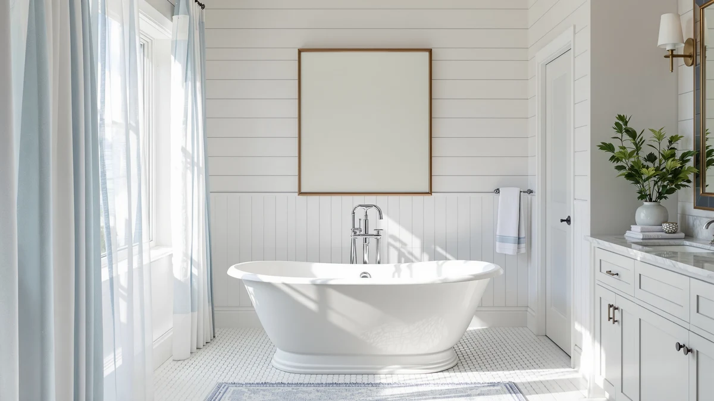

Things to Know Before You Buy
- Code minimum is 21 inches, comfort minimum is 30. Most building codes require 21 inches of clear floor space in front of a freestanding tub, but 30 inches feels far better for everyday use.
- Freestanding tubs need access on multiple sides. Unlike alcove tubs, they are not tucked against a wall, so cleaning and plumbing access eat into your clearance budget.
- Faucet style changes the math. A floor-mounted faucet needs more wall clearance behind the tub than a deck-mounted one.
- A showroom-size tub can overwhelm a small bathroom. The required clearance around it, more than the tub's footprint alone, determines whether a given size actually fits.
- Door swing gets overlooked until installation day. Check the full arc of the door against the tub's footprint before you order.
How much space around freestanding tub placement you need determines whether your bathroom renovation goes smoothly or stalls at the inspection stage. Building codes, plumbing access, and plain elbow room all factor into the clearance a freestanding tub demands, and the number is rarely as generous as showroom photos suggest. Most homeowners underestimate it until they lay a tape measure across their own bathroom floor.
We researched manufacturer installation guides, International Residential Code clearance requirements, and verified owner reviews describing their own renovation measurements before writing down a single number here. Expect the minimum clearance on every side of the tub, how faucet and drain placement change that math, and the mistakes that force people to return a tub that looked fine on paper.
Measure your own bathroom first, check that number against both the code minimum and what actually feels comfortable, then pick a tub size that fits the room instead of fighting it.
What You Need to Know
The question of how much space you need around a freestanding tub starts with code, not preference. The International Residential Code calls for a minimum of 21 inches of clear floor space in front of any fixture, including a tub, measured from the front edge to the nearest wall or obstruction. That number is a floor, not a comfortable target. Most contractors recommend 30 inches of clearance on the side you step in and out of, because anything tighter turns a daily routine into an obstacle course.
Freestanding tubs also need clearance that alcove tubs skip entirely. Because the tub sits away from the wall rather than tucked into a three-sided nook, you need enough room to walk around at least part of its perimeter for cleaning, towel access, and plumbing repairs. Plan on 4 to 6 inches minimum between the tub and any wall it backs up to, and more if supply lines run along that side.
Ceiling height and door swing matter too. A tall soaking tub paired with a low window sill, or a door that swings into the clearance zone, can make an otherwise well-measured bathroom feel cramped. Skip this check and you may end up trimming door moldings or rehanging the door to swing outward after the tub is already in place, so walk the full arc before you commit to a layout.
Types and Categories
Freestanding tubs break down into a few footprint categories, and the category you choose affects required space as much as the room itself. Oval and double-slipper tubs tend to run wide, often 32 to 34 inches across, which eats into side clearance fast in a narrow bathroom. Single-slipper and rectangular tubs trim several inches off the width while keeping a similar length, making them an easier fit for standard-size bathrooms.
Pedestal and clawfoot styles
Pedestal-style freestanding tubs, which sit on a raised base rather than four feet or a skirt, need extra clearance underneath for cleaning and to avoid trapping moisture. Clawfoot tubs sit higher off the floor on their feet, so the clearance concern shifts toward the exposed plumbing lines running along the floor rather than the footprint itself.
Compact and foldable tubs
Compact and foldable freestanding tubs exist specifically for bathrooms that cannot accommodate a full-size footprint. These sacrifice some soaking length for a smaller clearance requirement, often fitting into spaces as narrow as 30 inches wide. They're worth a look next to a standard freestanding model if your bathroom is under 60 square feet, since the space you save on the tub itself goes directly back into walking room around it.
How to Choose
Start with a tape measure, not a catalog. Measure the full width and length of the bathroom, then subtract the footprint of every fixed element: the vanity, the toilet, any built-in storage, and the door swing arc. What remains is your real working space, and it is almost always smaller than the room's square footage suggests.
Once you know your working space, work backward from clearance requirements rather than forward from the tub you like. If your bathroom gives you 60 inches of width after subtracting fixtures, a tub with a 32-inch footprint leaves 28 inches for clearance, which you then split between the sides that need access. A single-slipper or rectangular tub often makes that math easier than an oval one.
Faucet placement deserves its own pass. A floor-mounted faucet needs clearance behind the tub for the valve body and supply lines, typically 4 to 6 inches more than a deck-mounted faucet requires, because a deck-mounted unit sits on the tub itself rather than the floor. Confirm the faucet style before finalizing wall clearance, not after.
Think about how you will actually use the tub day to day. If you dry off standing in front of it, that side needs the full 30 inches, not the 21-inch code minimum. If a second person needs to pass behind the tub to reach a shower or sink, add walking clearance on that side too, even where code does not strictly require it. Finally, check your door swing and any windows at bath height, then mark the tub's footprint on the floor with painter's tape before you order anything.
Common Mistakes to Avoid
- Measuring the tub but not the clearance zone around it. A tub that is 60 inches long and 32 inches wide needs a footprint closer to 66 by 50 inches once you add code-minimum clearance on the access sides, and that gap is where renovation plans go wrong.
- Ignoring faucet style until installation day. Floor-mounted faucets need more wall clearance than deck-mounted ones, and discovering that mismatch after the tub arrives often means returning either the tub or the faucet.
- Underestimating how a tub shrinks a small room visually and physically. A deep soaking tub that looks proportional in a showroom can make a 7-by-9-foot bathroom feel like a hallway once the required clearance is marked out on the actual floor.
- Skipping the door swing check. It's easy to install a freestanding tub only to find the bathroom door scrapes the tub's edge or can't open past 45 degrees, and fixing that usually means rehanging the door to swing outward.
- Assuming code minimums equal comfortable minimums. Twenty-one inches satisfies an inspector, but 30 inches is what most people actually want for drying off, stepping in, and cleaning around the tub without feeling boxed in.
Care and Maintenance
The clearance you build in around a freestanding tub pays off every time you clean it. Because these tubs sit exposed on multiple sides rather than tucked into an alcove, dust, hair, and moisture collect underneath and along the back edge where a built-in tub would hide them. A gap of at least 4 to 6 inches behind the tub gives you enough room to reach in with a cloth instead of pulling the tub away from the wall.
Check the area under pedestal-style tubs regularly. Standing water or trapped humidity in that gap encourages mold, especially in bathrooms without strong exhaust ventilation. Wipe down the floor around the base every few weeks, and dry it fully rather than letting it air-dry on its own.
Inspect exposed plumbing lines on clawfoot and leg-style tubs at the same time you clean the surrounding floor. These lines sit in the open rather than behind a wall panel, so a slow leak shows up as water pooling in the clearance zone before it becomes a bigger problem. If your tub sits close to the code minimum on any side, keep that strip of floor clear of bath mats or storage baskets. Reviewers consistently note that cluttering the clearance zone is the fastest way to turn a tight-but-legal layout into a cramped one.
Our Top Picks
If you have confirmed your bathroom can accommodate a freestanding tub's footprint and clearance, these three options cover a range of sizes and budgets worth comparing before you measure for real.

Editor’s Pick
DeerValley 55" Acrylic Freestanding Bathtub
At 55 inches long, this acrylic tub fits bathrooms that cannot accommodate the larger 60-plus inch freestanding models, while still leaving room for the clearance a freestanding design requires.
$579.00
Check Price on Amazon
Best Value
Foldable Bathtub for Adult 59'in
This foldable design collapses for storage when not in use, which is worth considering if your bathroom's clearance math only works part of the time.
$59.99
Check Price on Amazon
Premium Choice
59" Stone Resin Freestanding Soaking
Stone resin construction adds weight and a wider base than acrylic models, so measure for a slightly larger footprint and more floor clearance before committing to this option.
$799.99
Check Price on AmazonFrequently Asked Questions
How much space do you need around a freestanding tub?
Most codes require a minimum of 21 inches of clear floor space in front of the tub, but 30 inches is more comfortable for everyday use. Add 4 to 6 inches of clearance behind the tub for plumbing access and cleaning.
Can a freestanding tub fit in a small bathroom?
Yes, if you choose a compact footprint such as a 55-inch single-slipper or foldable model and measure the full clearance zone before buying. Bathrooms under 60 square feet usually need the smaller end of the size range to leave room to walk around the tub.
How far should a freestanding tub sit from the wall?
Plan for at least 4 to 6 inches behind the tub, more if a floor-mounted faucet runs along that wall. That gap gives you room to reach behind the tub for cleaning and plumbing maintenance.
Do freestanding tubs need more clearance than alcove tubs?
Generally yes. Alcove tubs sit against a wall on three sides and only need clearance in front, while freestanding tubs need accessible space on multiple sides for cleaning and plumbing.
What is the minimum room size for a freestanding tub?
A bathroom around 7 by 9 feet can usually accommodate a 55 to 59-inch freestanding tub with code-minimum clearance, though 8 by 10 feet or larger is more comfortable. Always subtract the footprint of other fixtures before relying on the raw square footage.
Verdict
How much space around a freestanding tub you ultimately need comes down to three numbers: the code-minimum clearance of 21 inches, the comfort clearance of 30 inches, and the real floor space left in your bathroom once every other fixture is accounted for. Measure first, shop second, and the rest of the decision gets much easier. Faucet style, tub category, and door swing all shift the math slightly, but none of them override the basic rule that a freestanding tub needs room to breathe on more than one side.
If your bathroom's dimensions are on the tighter end, a compact model like the DeerValley 55-inch acrylic freestanding tub keeps the footprint manageable without sacrificing the look of a true freestanding design. Whatever size you land on, mark the clearance zone on your floor with tape before the tub arrives. That five-minute step catches more layout problems than any spec sheet will.